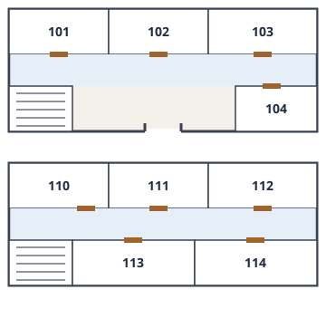

What is an algorithm?
Learn with an AI tutor
An AI tutor explains this page to you and helps you with the exercises. Choose your assistant:
Open with Claude Open with ChatGPT Open with Mistral Vibe
You use your own account with the provider. The assistant is not offered by lernapps.net: lernapps only provides the content and the exercises. The choice holds for all pages, on this device only.
Ali looks for the computer room
In class 7b's group chat, on the first day of school:
Ali: Hi, I'm new 👋 Where is computing tomorrow?
Jona: Room 112. Just go in, then left somewhere, it's not far 😅
Selin: 1. Go in through the main entrance. 2. Left to the stairs and up to the first floor. 3. Upstairs, go right along the corridor. 4. Third door on the left: room 112.
Ali: Thanks, Selin! Even I can manage that.
Here you learn what makes Selin's message special: it is an algorithm.
Exercise
Solution
Selin's four steps right answer
Each step says exactly what Ali has to do, and the order is clear. He doesn't have to guess anything.
Jona's “Just go in, then left somewhere”
“Left somewhere” can mean many things: Ali has to guess where to turn.
“Room 112 is on the first floor.”
That's true, but it doesn't say what Ali should do. He doesn't know where the stairs are.
“Just ask someone in the corridor.”
That only passes the task on. It doesn't say how Ali finds the room.
Selin's message is made of steps that Ali can carry out one after another until he reaches the goal.
A precise set of steps

© CC-BY-4.0- main entrance
- stairs
- room 112, the computer room
- room 104, the school office
At the top the ground floor, at the bottom the first floor. Trace Selin's route with your finger.
Selin doesn't write a description of the school but a set of instructions: step by step, in a fixed order. Whoever follows them always gets there, whether it's Ali, you or a robot.
- algorithm
An algorithm is a precise set of step-by-step instructions that solves a problem or completes a task. Whoever carries it out doesn't have to guess anything.
Remember
Algorithms are everywhere, not only in computers: a recipe, assembly instructions, column addition. A weather report is not one: it says how something is, not what to do.
Try it yourself
Without a computer, in pairs:
- Choose a place in your school, for example the school office.
- One of you writes down the route from your classroom in numbered steps.
- The other one sets off and does only what is on the paper, without asking.
- Wherever you had to guess, improve that step. Then swap.
Practice
Exercise
Solution
a recipe for pancakes right answer
A recipe tells you step by step what to do until the pancakes are ready.
the assembly instructions for a shelf right answer
The instructions lead to the finished shelf in numbered steps.
the weather report for tomorrow
The weather report describes what the weather will be like. It doesn't say what anyone should do, so it is not a set of instructions.
class 7b's timetable
The timetable shows when each subject is. It contains no steps that solve a task.
the instructions for logging in to the school Wi-Fi right answer
It tells you step by step what to type and click until you are on the Wi-Fi.
An algorithm says what to do, in steps, until a task is solved. A description or an overview is not enough.
Exercise
Solution
Right answer: recipe – bake a cake; assembly instructions – build a shelf; route description – find a room; column addition – add two big numbers
Every algorithm belongs to a task. It is finished when the task is solved.
Exercise
Solution
Right answer: 1. Go in through the main entrance., 2. Go right along the corridor., 3. Go to the last door on the right., 4. Go through the door into room 104.
First in, then right, then on to the door. In any other order Ali won't get there.
Exercise
Solution
Right answer: The statement is false.
People carry out algorithms too, for example when cooking from a recipe or doing column addition. A computer just needs them to be especially precise.
What comes next
You can now explain what an algorithm is and write down a route as steps. Frau Berg writes in the chat: “Tomorrow we'll play with command cards. I wonder which cards will be broken.” On the next page you check when a set of instructions really is an algorithm.
Found a mistake or have an idea for this app?